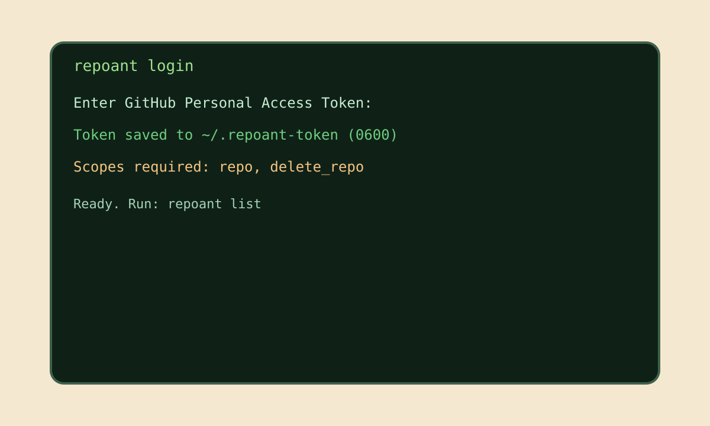
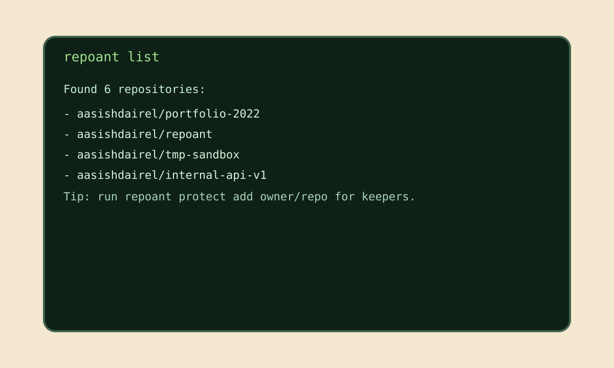
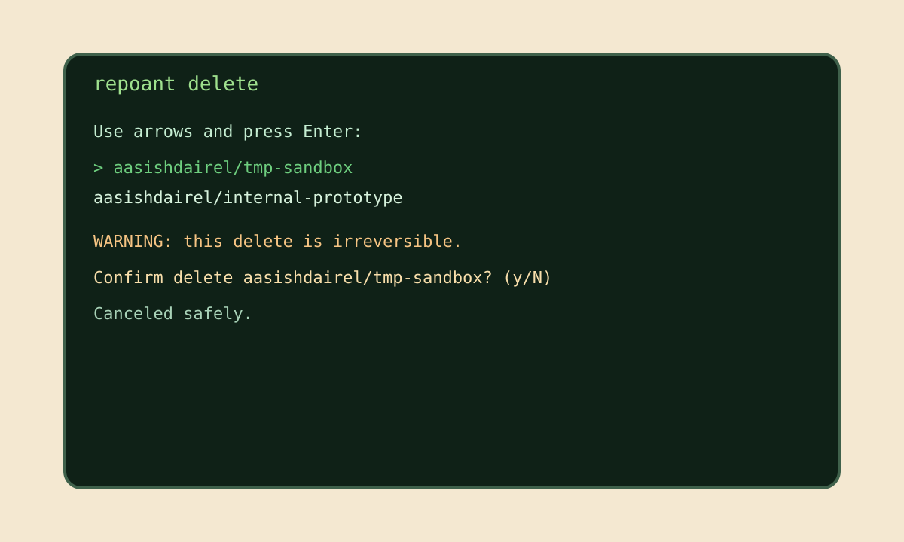
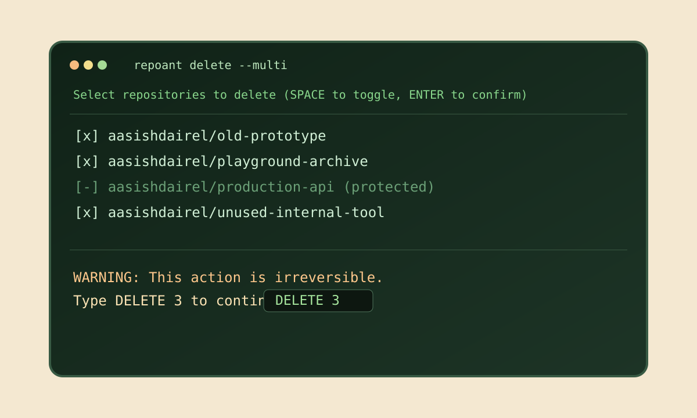
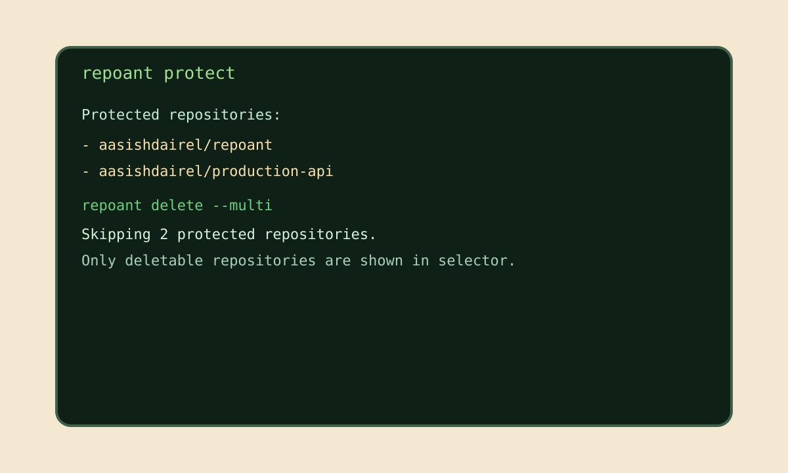
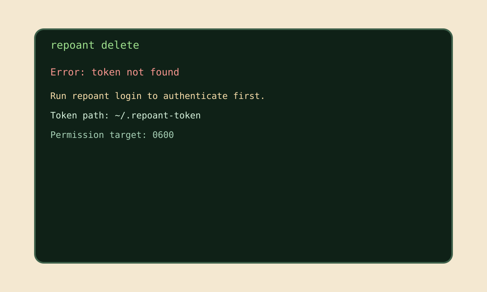

Why teams pick RepoAnt
- Interactive selection for single or multi-delete workflows
- Protected repository list to prevent irreversible mistakes
- Strong confirmation prompts for high-risk actions
Safety-first GitHub cleanup
RepoAnt is a focused CLI for developers who need to clean GitHub repositories in bulk, with protection rules and confirmation flows that keep critical repos safe.
AasishDairelSahayaGrinspan / repoant
Use this section to market the real interface before users install. It simulates the main CLI scenarios users care about before running destructive commands.






Install and run in less than two minutes.
brew tap AasishDairelSahayaGrinspan/repoant
brew install repoantrepoant loginrepoant delete --multiRead the SEO-focused deep dive page that explains RepoAnt workflows, safety model, and platform support in detail.
Documentation now includes setup, command reference, scenario playbooks, media update instructions, and GitHub Pages deployment troubleshooting.
Open Documentation